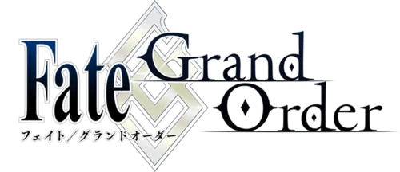

|  | Grand OrderMain Record 1: Observer on Timeless Temple Fate/Grand Order : Observer on Timeless Temple is the first stage of Fate/Grand Order. Set in A.D. 2004. |
| Time | Designation | Humanity Foundation Value |
|---|---|---|
| A.D. 2004 | Singularity F | C |
| A.D. 1431 | First Singularity | C |
|
|